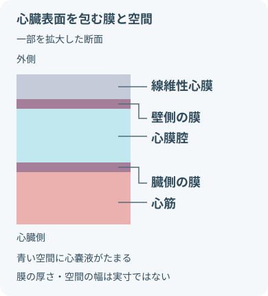
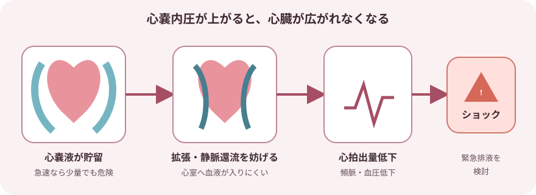
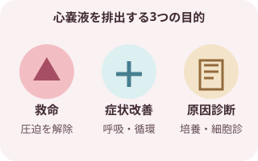
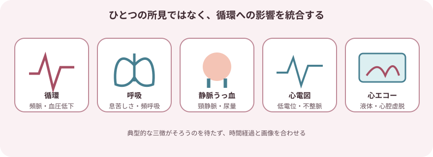
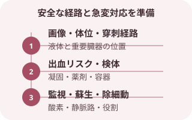
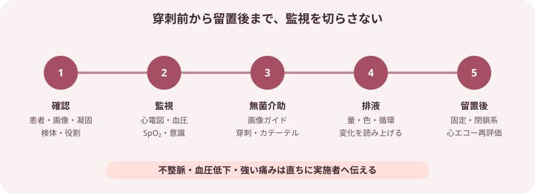
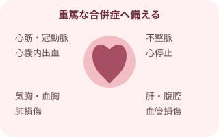
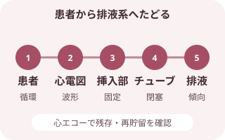
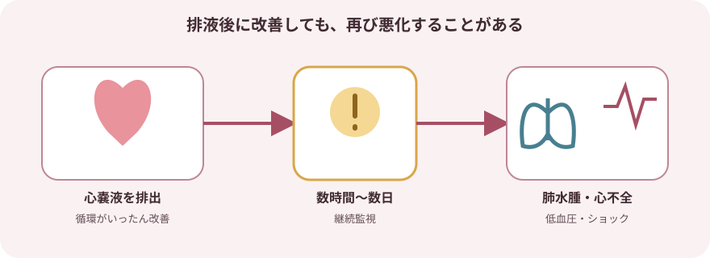
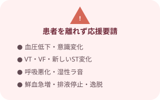

心タンポナーデのしくみ

- 心膜は心臓を包む袋。
- 漿膜性心膜の壁側と臓側の間が心膜腔で、心嚢液がたまる空間になる。
- 臓側の膜は心臓表面を覆う心外膜にあたる。
- 心筋や心臓の内腔とは区別する。
- 位置関係を示す図であり、穿刺位置・経路・深さを指定するものではない。

重症度に関わる要因
- 心嚢液の量
- たまる速さ
- 心膜の伸びやすさ
- 循環への影響
- 心嚢液の量だけで判断しない。
量が少なくても急速にたまれば危険
- 心嚢内圧が上がると心室が拡張しにくくなり、一回拍出量と心拍出量が低下する。
- 現れ得る徴候
- 頻脈
- 血圧低下
- 脈圧狭小
- 頸静脈怒張
- 呼吸困難
- 意識変化
- 三徴
- 低血圧
- 頸静脈怒張
- 心音減弱
これらの三徴がそろうのを待たない。
- 心エコー所見と患者の血行動態を合わせて緊急度を判断する。
目的と適応

救命・症状緩和・診断のために排液する
- 心タンポナーデ：圧迫を解除して循環を回復させる
- 症候性の中等量～大量心嚢液：薬物治療で改善しない症状を軽減する
- 細菌性・腫瘍性などが疑われる場合：心嚢液を検査し、治療方針につなげる
- 再貯留への対応：カテーテルを留置し、持続的に排液する
- 循環が不安定な心タンポナーデでは緊急ドレナージが必要になる。
- 外科的ドレナージが選択されることがある状況
- 経皮的穿刺が困難
- 膿性
- 外傷性出血
- 術後出血
- 心筋破裂が疑われる
- 大動脈解離が疑われる
- これらの場合などは、外科的ドレナージが選択されることがある。
心タンポナーデを疑う観察

- 典型所見がすべてそろうとは限らない。
- 時間経過と組み合わせる。
循環
- 頻脈
- 血圧低下
- 脈圧狭小
- 四肢冷感
- 毛細血管再充満遅延
- 尿量低下
呼吸
- 呼吸困難
- 頻呼吸
- SpO₂低下
- 起坐呼吸
静脈うっ血
- 頸静脈怒張
- 中心静脈圧上昇
低容量では目立たないことがある。
心音・脈
- 心音減弱
- 奇脈
奇脈は、吸気時の収縮期血圧低下が大きい所見。
意識
- 不穏
- 反応低下
- 失神
低灌流の徴候として捉える。
心電図
- 洞性頻脈
- 低電位
- 電気的交互脈
- 不整脈
心エコー
- 心嚢液
- 右房の虚脱
- 右室の虚脱
- 下大静脈拡張
- 下大静脈の呼吸性変動低下
処置前の確認と準備

急変と合併症にすぐ対応できる状態をつくる
- 患者・指示
- 患者
- 目的
- 同意
- アレルギー
- 感染症
- 絶食の指示
- 鎮静の指示
- 心エコー・CTなどで液体の位置と穿刺経路を確認
- 出血リスク等
- 血算
- 凝固
- 血液型
- 抗凝固薬
- 抗血小板薬
- 監視
- 心電図
- SpO₂
- 頻回血圧
必要時は観血的血圧も監視する。
- 救急対応の準備
- 酸素
- 吸引
- 静脈路
- 救急カート
- 除細動器
- 処置物品
- 無菌物品
- 局所麻酔
- 穿刺セット
- 排液容器
- 検体容器
心嚢穿刺・ドレーン留置の介助

- 排液開始後も処置は終わりではない。
- 循環の改善と新たな悪化を同時にみる。
- タイムアウトを行うチームで確認する項目
- 患者
- 処置
- 画像
- 穿刺部位
- 出血リスク
- 検体
- 緊急時の役割
- 体位と監視を整える連続または頻回の観察
- 心電図
- SpO₂
- 血圧
呼吸・循環に無理のない体位を保つ。
- 無菌操作を介助する処置の介助
- 画像ガイド
- 局所麻酔
- 穿刺
- ガイドワイヤー
- カテーテル留置
患者へ短く声をかける。
- 排液中の変化を伝える変化を読み上げる項目
- 排液量
- 排液の色
- 血圧
- 脈拍
- 心電図
- 疼痛
- 意識
- 呼吸
異常時は直ちに止めて報告する。
- 接続・固定・再評価を行う
- 閉鎖式排液系へ接続する。接続後の確認
- 挿入長
- 固定
- 屈曲
- 排液経路
- 心エコーと血行動態の改善を確認する。
- 閉鎖式排液系へ接続する。
処置中・直後の合併症

小さな変化を処置チームへ即時共有する
心臓・血管損傷
- 心筋損傷
- 心腔損傷
- 冠動脈損傷
- 心嚢内出血
不整脈
- 心室頻拍
- 心室細動
- 徐脈
循環への影響
- 血管迷走神経反射
- 低血圧
- 心停止
胸腔内の合併症
- 気胸
- 血胸
- 肺損傷
周囲臓器・血管損傷
- 肝損傷
- 腹腔内臓器損傷
- 内胸動脈損傷
その他の合併症
- 感染
- 空気混入
- カテーテル逸脱
- 閉塞
ドレーン留置中の管理

患者から排液系まで順にたどる
- 患者
- 血圧
- 脈拍
- 意識
- 末梢循環
- 尿量
- 呼吸
- 疼痛
- 心電図
- 頻脈
- 不整脈
- ST変化
- 挿入部
- 出血
- 血腫
- 発赤
- 浸出液
- 固定
- 挿入長
- チューブ
- 屈曲
- 圧迫
- 凝血塊
- 接続外れ
- 牽引
- 排液
- 時間量
- 累積量
- 色
- 混濁
- 凝血塊
- 急増
- 急減
- 画像：残存・再貯留と心臓の動きを指示された心エコーで確認
独断で操作しない
- 自己判断で行わない操作
- 吸引
- フラッシュ
- ミルキング
- クランプ
- 採取
- 閉鎖式の接続を保ち、無菌的に取り扱う。
- 排液バッグの位置と扱いは使用製品・院内手順に従い、逆流や牽引を防ぐ。
- 突然排液が止まっても改善と決めない。排液停止時の確認
- 循環悪化
- 屈曲
- 凝血塊
- 位置異常
- 再貯留
- 新しい鮮血や急増は出血、突然の血性排液停止と循環悪化は閉塞・再タンポナーデを疑う。
心膜減圧症候群

- 排液後に起こることがある変化
- 肺水腫
- 右心不全
- 左心不全
- 低血圧
- ショック
- 心嚢液の排出後、数時間から数日以内にこれらが起こることがある。
- いったん循環が改善したように見えても、これらが起こる可能性はある。
- 心膜減圧症候群はまれだが重篤になり得る。
呼吸
- 呼吸困難
- 湿性ラ音
- SpO₂低下
- 酸素需要増加
循環・意識
- 血圧低下
- 頻脈
- 四肢冷感
- 尿量低下
- 意識変化
うっ血
- 頸静脈怒張
- 浮腫
- 肺うっ血
- 処置後も連続監視を続ける。
- 変化時は心エコーなどの再評価へつなぐ。
心嚢液検体
- 検体は病因診断につながる。
- 指示される検査の例
- 細胞数
- 分画
- 生化学
- 細菌培養
- 抗酸菌培養
- 細胞診
- 病理
検査部へ確認する条件- 容器
- 量
- 保存条件
指示された検査に合う条件を検査部へ確認する。
- その場で照合する項目
- 患者情報
- 採取部位
- 採取時刻
- 検体
照合後、速やかに提出する。
- 添加剤や培養ボトルを一律に決めない。
抜去の介助
- 抜去条件を確認する抜去前の確認
- 排液量と性状の推移
- 循環状態
- 再貯留の有無
- 心エコー
- 凝固状態
- 抜去後の観察指示
- 患者へ説明し監視を続ける抜去時の観察
- 心電図
- SpO₂
- 血圧
体位と処置内容を説明する。
- 無菌的に抜去を介助する
- 固定を解除し、実施者の抜去後に創部を圧迫・被覆する。
- 抵抗がある場合は無理に引かない。
- 再貯留と出血を観察する抜去後の確認
- 血圧低下
- 頻脈
- 呼吸困難
- 胸痛
- 頸静脈怒張
- 創部出血
指示された心エコーを行う。
医師が抜去時期を判断する要素
- 原因
- 排液の傾向
- 循環状態
- 画像所見
- 再貯留リスク
単一の排液量だけで決めない。
すぐに応援を呼ぶ変化

患者を離れずABCDEで再評価する
循環・意識
- 急な血圧低下
- 脈圧狭小
- 頻脈
- 徐脈
- 意識変化
心電図
- 心室頻拍
- 心室細動
- 新しいST変化
呼吸
- 呼吸困難
- SpO₂低下
- 湿性ラ音
出血
- 急な鮮血排液
- 急な排液増加
- 創部出血
排液系
- 循環悪化を伴う排液停止
- カテーテル逸脱
- 接続外れ
記録と申し送り
処置
- 適応
- 穿刺経路
- カテーテル種類
- 挿入長
- 固定
- 処置時刻
処置前後・経時的な状態
- 血圧
- 脈拍
- 心電図
- SpO₂
- 意識
- 尿量
排液と検体
- 時間量
- 累積量
- 色
- 性状
- 凝血塊
- 検体提出
再評価
- 心エコー所見
- 症状と循環の改善
- 合併症の有無
実施・報告・指示
- ドレーン操作
- 医師への報告
- 指示
- 対応後の変化
出典
- 米国国立医学図書館（NLM）, MeSH — Pericardium
- NHLBI, How the Heart Works — What the Heart Looks Like
- European Society of Cardiology, 2025 ESC Guidelines for the management of myocarditis and pericarditis
- ESC 2025 Guidelines official slide set — interventional techniques in pericarditis
- ESC, Pericardiocentesis in cardiac tamponade: indications and practical aspects
- American Heart Association, Treatment of Pericarditis